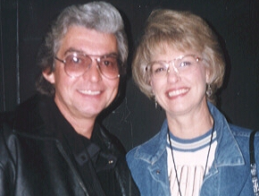

Users and Goals
- Prospective Student
- include or exclude the course and the University as quickly as possible.
- apply for admission with the minimum of effort and time.
- Current Student
- ascertain and perform course activities.
- get current events information (sports, art, music, plays, theatre, lectures, speakers).
- Parents
- determine the suitability of the course and University.
- ascertain the progress of my student child.
- Alumni
- get current events information.
- continuing education information.
- to contact faculty.
- contact other alumni.
- contact the records department.
- Faculty
- find the portal to the faculty web site.
- look for a suitable position.
- get current events information.
- Media
- get current events information.
- faculty/researcher news
- University news as it affects their readers/viewers/listeners.
- Researchers
- High School teacher, developing own courses to prepare students for University.
- for developing Postgraduate courses.
- finding research projects.
- current research work/findings.
- access library material.
- Corporate
- Human Resources; develop internal training programs.
- develop training programs incorporating University courses.
- Business to University relationships.
- to locate grants and grant projects.
- exchange ideas.
- borrow/lend skilled staff.
- access research.
- internships.
- Staff
- portal to the Human Resources system.
- look for a new job, better job.
- Local community
- events, to be entertained, educated, cultured.
- Search Engine
- provide lots of links that will bring interested parties to the home page
- provide user satisfaction, ensure user continues to use the engine.
- Job Seeker
- Looking for a job at the University.
- Curious Users
- What is this University
User Scenarios
I have chosen the following key user groups:
- Prospective Student.
- Prospective Post Graduate Student.
- Parent of a Prospective Undergraduate student.
- A member of the Alumni.
- Corporate Human Resources Director.
- Name
- Quote
- Profession
- Background
- Goals
- A story of their interaction with the idealized web site.
Joann"There must be the perfect course at the perfect University. If only I could find it!" Joann will graduate from high school this year. She has done very well and expects to enter a good University in the fall. She reads extensively and will probably major in English Literature. She hopes to become a writer. She has just begun her search for a suitable course. She has a few ideas concerning a preferred institution. She would prefer to study in the London area to remain close to her friends and family. Her parents have high hopes for their bright little girl and are actively helping her with her search. |
Compiled with her own research, and with her parents and teachers recommendations, Joann has made a short list of possible Universities. She starts with Essex University because it is first in the alphabetically arranged list. From the University home page, Joann quickly locates information about the University and confirmed that it is indeed in the London area. She notices a mention about extensive on-campus housing, and that, as an undergraduate, she would have a guaranteed place at a hall of residence for at least two years. Joann locates the BA English Literature course and is impressed by the level of detail. She notices that the course includes studies of some of her favorite writers as well as many with whom she is unfamiliar. She is excited by this, an heightened urge to discover more. Joann notices that she may direct her questions directly to a faculty member, whose contact information is prominently displayed. She is quietly relieved that she may obtain information without having to fish through the corridors of officialdom. Having been reminded, Joann resolves to read the faculty information, which she then locates with ease. Joann notices the list is both extensive and detailed. She recognizes several names and is dutifully impressed. They must have written enough books between them to fill a library, she thinks, and once reminded, and mindful of the importance of the library, she resolves to investigate. Joann scans the list of appropriate books by author, the list taking her some time to read. There are many books she has read, but she is very well read, and there are so many other great books Joann checks the current events and sees there is much to do at the University and also in the local area. By now, Joann has found the information she needs, she is excited about the University and is having visions of a future studying at Essex University. She needs to talk to her parents, but she noticed that she can easily apply for admission, the application process including an explanation that itself required no explanation. She decides to request a prospectus be sent to her home and excitedly resolves to discuss the matter with her parents at dinner that evening. |
Michael "I need to do something about my career. I know education can help and, in my line of business, an MBA is almost a requirement." Michael is a 30 something single guy whose management job at a big multinational corporation has gone into neutral. His company will pay for the tuition for an MBA, aiding Michael's decision to get it done. He is limited to the Universities in his area but this should not present a problem. Michael is a keen football player and is looking forward to playing for the University. |
Michael, confronted by and, in a strange way, comforted by, a short list of possible Universities, begins his investigation. Essex University is at the top of his list because the HR department recommended it, and many of his colleagues have degrees from the University. He has been told the MBA course is excellent and that many MBA's from Essex have done very well in the area's big corporations. Michael is immediately struck by the lofty academic feelings of the site. It makes him strangely uncomfortable, a part of him says that this is too difficult, far too challenging, that he is finished with education. His mind wanders over the difficulties of earning his degree, of 16 years of education, of the incredible effort and horrible stress levels he endured. Just then his mind wanders back to the boredom of his current position, the endless meaningless assignments and the difficulties of locating a better position. He knows he needs to move on, and he knows, in his heart and mind, that this is the way to do it. Fortified with a new resolve, Michael looks over the details of the course. Considerable detail, he notes, but much is familiar. "Not so surprising" he thinks, as I have been involved in many business processes in many ways, although not to this level. Michael now feels a sense of rising excitement, his focus sharpening on the possibilities, his earlier anguish drowned by the onrushing tides of optimism. Michael notes the business relationships between several of the faculty of many local corporations, including his own. He notices the considerable achievements of the faculty members, and is a little intimidated, even jealous. Michael, satisified that he meets the admissions requirements for the course, decides to apply. He notices that he can do so without cost, and the application process is simple. With nothing to lose and everything to gain, with a strange pain in the pit of his stomach, yet surrounded by an aura of the possible, he applies for admission. He locates the tuition costs for the course, along with the procedures and emails them to his HR director, asking for verification of reimbursement. Michael requests a prospectus be sent to his home, so he may read the details at his leisure. Finally, Michael looks for the football teams record for the last year and emails some questions to the coach. |
|  | Joe and Carol "We are naturally delighted that our son may be able to gain admissions to a University. We hope that he will be happy and successful." Joe, a used car salesman and his wife, a homemaker, live in the northern city of Durham. Their oldest son, Daniel, or Dan to his friends, has never been the best of students, and his current fortunate position is largely due to a concerted effort over the last year or two. He is far more interested in sports, pubs and girls, quite usual they suppose, but he will need to apply himself if he is to be a success at University. Further, with two younger sisters, the parents are concerned their money is well spent. |
Joe and Carol are, quite frankly, amazed their son may get into University. Until recently, there was no indication they could possibly be in their current situation. With no experience of their own, they find themselves heavily dependent on the views of Dan's school teachers. An aptitude test has shown that Dan could have what it takes to become an accountant, a state of affairs that delights Carol but mystifies Joe. "From where did he get it", he says, "None of my family could ever figure out maths" he continues "except when a buyer is on the hook of course then anybody can do maths!" he corrects himself. Dan and his teachers have provided them with a list of possible Universities to consider. Being computer illiterate themselves, they have enrolled their youngest daughter Sarah, along with her computer Dilbert, to aid in their study of the unfathomable. This feeling was amplified when Sarah, employing those magic fingers that the kids of today all seem to possess, made the University images appear. They had seen this web thing before, mostly to check out the football results, but this was way beyond that. It all seemed so, well, so academic. Sarah employed her magic fingers to find the details of the accounting course. The information did not mean much to them and they hoped, with some concern, that Dan would understand. The admissions requirements for the course were indeed most comprehensive, revealing that Dan would probably struggle to qualify. They worry that, even if he gained admission, he may find the going very tough. They decide to put aside their concerns and press on. Sarah noticed a mention of a prospectus and, wondering what it is, decided to investigate. Carol suggests they request one but Joe, mindful that Dan may already have requested one, suggests they wait. Joe, a little uncomfortable with proceedings, notices a mention of tuition costs and asks Sarah to suitably deploy those magic fingers. He sees the tuition costs and is a little surprised. "Not too bad" he thought, as he also read details of the available financial aid. His emotions touched the borders of elation when it was suggested the government will pick up almost all of the cost of the tuition. This however soon passed, as his wallet's pangs of pain reminded him there would most certainly be other costs. Sarah becomes mindful that her brother's departure, vacating the room at the back of the house, would allow her to escape from the clutches of her overbearing sister. Her magic fingers, driven by a vision of domestic bliss, locate the campus housing details where, she is relieved to note, her brother, God bless him, would be able to stay for at least two whole years. She gleefully presents her findings to her parents who, still looking for a Government inspired trap, require more than the usual effort before they finally grunt a form of acknowledgement. Carol just then notices an address to which she could write for details. This is more familiar territory, a medium with which she has comfort. She decides to write for a prospectus. Joe and Carol leave the room, Sarah now switching her attention to her homework, or something. They feel the University looks very impressive but they are unsure about something, an all encompassing uneasy feeling. They hope the prospectus will help them. They are concerned that Dan would not gain entry, unclear about what Dan wants. They would prefer if Dan stayed in the north but are unsure what to do or say as Dan rarely listens to what they say, in any case. |
Chrissie "University was the best time of my life. I just love to go back, whether to see friends, talk to my professors, listen to a concert or just to walk the grounds. I just love the place." Chrissie is a graduate of the University of Essex, her major was journalism. In the few years since her graduation, she has enjoyed a meteoric rise. She started at a local newspaper where her talent was quickly recognized. She was recommended to a large daily paper where she landed a job in the youth fashions department. Her understanding of the teenage culture made her invaluable to the editor, who promoted her to editor of the parent company's new magazine, Teenagers Today. When not working, Chrissie loves to sing and dance. |
Chrissie has often been described as a sassy chick and a ballsy Essex bird. These terms she considers a compliment. Men describe her as gorgeous, irresistible. Her friends describe her as a high energy girl, full of life, love, charm and enthusiasm, who bounces her way over problems, as well as what could be described as the travails of life. Chrissie has been blessed with good fortune, having been given so many gifts, and yet is still blissfully unaware of the pains of life. She loves controversy, indeed courts it, and will not shy away from an opportunity to express her views. She is a mixture of contradictions, an enigma, a pigeonhole eluding persona, yet a character that is all too aware of its uniqueness. It is hard to define her essence, but she is an immensely popular woman. Chrissie often checks out the old place, her loving term for Essex University. She scans through the list of current events, particularly for the frequent concerts at the University Main Hall. A good concert is a great opportunity to get together with many of her old friends. Chrissie notices her favorite band will be playing in some three months time. She immediately emails her friends asking for interest, but also requesting early commitments so a head count may be determined. Finally, Chrissie looking for information about this years Alumni reunion, notices that an ex-professor will be giving a speech in a few weeks time. "It would be great to see him again" she thinks, making a note in her book. She locates the contact information of the meeting organizer and emails for status information. |
Mary "Trying to find young, skilled talent has never been easy. Keeping the employees skilled in such a fast changing business is even harder." Mary has been head of Human Resources at a London based high tech corporation for fifteen years. During this time, she has seen much change within her company, including two takeovers and a merger. She has hired some 2000 people in that time, many from Universities. She has developed the companies training procedures and is currently adapting them, once again, due to various new technologies in use in her company. She is always searching for talented individuals, and for courses that will be a cost effective way of training the employees. Mary is married to Thomas, a vice president at an area pharmaceutical. They have two grown children and three dogs. |
Mary has been in Human Resources for almost all of her adult life. She is liked by most and respected by all. When she became Head of Human Resources everyone, even most of her enemies, thought there could not be a better choice. Her friends say that she was born for the job, that her enthusiasm is infectious and that she improves the performance of those around her. Mary regularly checks the Essex University web site. On this day, she starts by looking into the MBA course, as she has a request for confirmation of tuition reimbursement. She looks at the course details, verifying the goals and content are consistent with the company's goals, and then at the tuition costs. She notices that, as usual, all is within the bounds of the company's acceptable practices guidelines, and so she emails a confirmation of tuition reimbursement. Mary then checks the BSc Computer Science and MSc Electronic Commerce courses to verify that graduates of these courses would be very suitable candidates for employment, as they usually have been in the past. Mary emails the University contact to ask for permission to participate in the upcoming careers fair. As she hasn't checked this in some time, Mary decides to read the faculty information, her primary focus being to ensure they continue to have the skills and experience to be able to teach the latest technologies. Mary is currently updating the company's array of internal courses. Some of these courses have become hopelessly obsolete, a complete replacement being the only sensible course of action. Mary looks through the list of part time courses, checking many of their details, to construct a list of possible courses that could become part of a solution. She emails the University contact to ask for a meeting to discuss the possibilities. |
Card Sort
I have never done this before and so I don't have a right way of doing this, nor a full understanding of the aim of this exercise. I plan to work it out as I go, and if it gets too complicated, I am going to give it a glancing blow and move on. A quick perusal of several sites has led me to consider this task as potentially a huge use of my time. As I don't fully understand the process, but understand enough to know that I could drown in this one, I had laid down some rules:
- If it gets too hard, it is probably because I am getting myself in too deep. I will back away and note what I can see.
- Many of these sites are remarkably flat. Beyond even two levels, the level of detail is so great that I would drown in information if I attempted to figure it out. Thus, I will only go to a level where the information categories are very different.
- Where the types of information are at least somewhat similar, I will consider the chain complete.
- Many of the duplicate items will only require a link.
Take careful note of the mission statement and the user types in constructing the site map. Remember, the user is rather like a mouse looking for the cheese.
Home
- Prospective Students
- Contents
- Introducing The University
- Undergraduate Students
- Departments
- Courses
- Courses
- Tuition Costs
- Financial Aid
- Scholarships
- Application
- Extracurricular Activities
- Request a Prospectus
- Too much detail - whatever the user type needs
- Departments
- Postgraduate Students
- Too much detail - whatever the user type needs
- International Students
- Application
- Degree Courses
- Non-degree Courses
- Request a Prospectus
- Accomodation
- and more....
- Parents & Guardians
- The City
- The University
- Departments
- Courses
- Courses
- Tuition Costs
- Financial Aid
- Scholarships
- Accommodation
- Student Facilities and Support
- Application Process
- Request a Prospectus
- Graduate Employment
- Online Prospectus
- Careers Advisor & Teachers
- The University
- Courses
- Tuition Costs
- Financial Aid
- Scholarships
- Graduate Employment
- and more....
- Graduates / Alumni
- Update your records
- Continuing Education
- Contact Old Friends
- Overseas Contacts
- News and Events
- Reunions
- Donations
- Business and Commercial Services/ Corporate
- Continuing professional development
- Commercial Services
- Business Relationship
- lots......
- Current Students
- Contents
- Careers, Jobs and Employment
- Computing Services
- Directory
- Course materials
- Documents
- Financial Services
- International Students
- Library
- Online Services
- Sports
- Student Organizations
- Support Services
- Timetables
- Regulations
- Campus Life
- and loads more....
- Visitors
- Contents
- Introduction to the University
- The city
- History
- Maps and Travel
- Accommodation
- News and Events
- Weather
- Directory
- Faculty
- Contents
- Administration
- Directory
- Current Events
- Portal to Faculty Web Site?
- Online Services
- Courses
- Departments
- Courses
- Course catalog
- UG prospectus
- PG Prospectus
- Continuing Education
- Departments
- Research
- Postgraduate Prospectus
- Research Centers
- Research Projects
- Research Findings
- Directory
- Contents
- Vacancies
- Media
- Latest News
- Current Events
- Faculty News
- Research Finding
- Staff
- HR Services
- Job Vacancies
- lots more.....
- The University
- Contents
- About the University - Missions Statement
- History
- The rector
- Directory
- Maps
- Current Events
- Terms and semester dates
- Departments
- Academic
- Research
- Library
- Students' union
- Services/Administration
- Admissions
- Career Resources
- Job Vacancies
- The City
- About the surrounding area
- Maps and Travel
- Accommodation
- Weather
- Local web sites
- Quick Links
- Site Index (A to Z)
- Site Map
- Campus Map
- Search
- Travel
- Campus Guide
- Weather
- Current Events
- Help
- Search
- Outreach Programs
- Community
- Education
- Economic Development
- Request a Prospectus
- Latest News
- Contact Us
- Feedback
It became clear early in the process that the key is to break down information by user type. Information can be accessible from any page and so duplication should not be a problem. Ensure that information is clear, concise and complete, and be able to access it from whichever page the targeted user type needs it.
Thus the need to understand the user types, to construct a structure that would address their needs.
The user scenarios are to allow me to better imagine their experience, what they need, where and how they will go about looking for it.
To display the site map in a way that helps me, I will need a graphical tool.